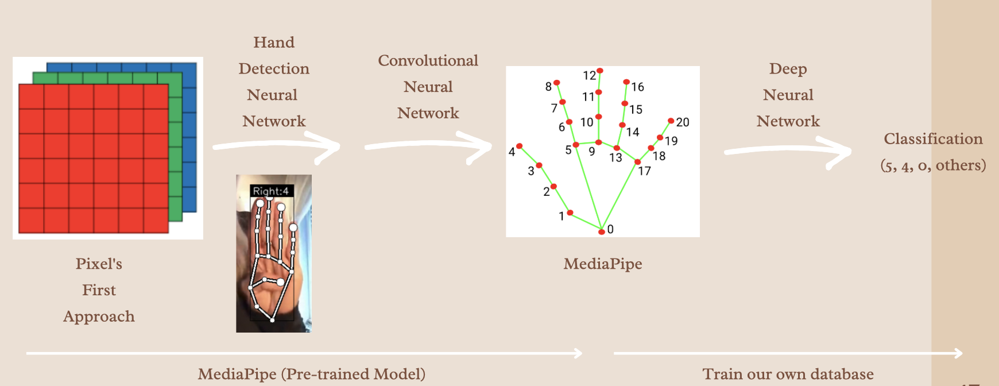
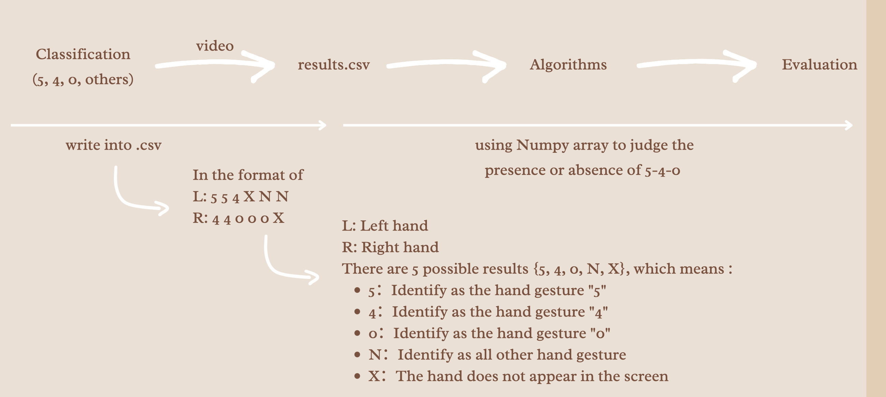
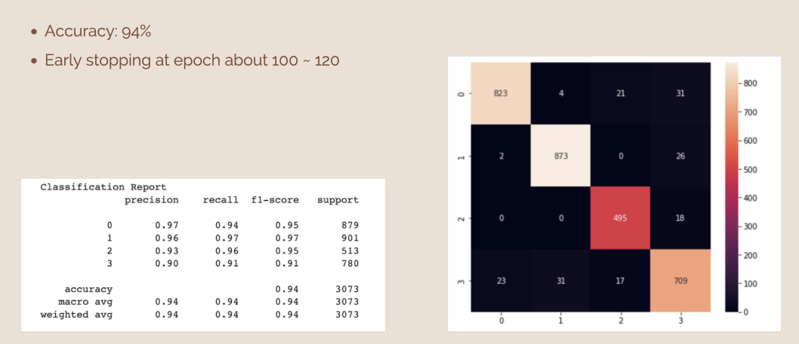

Year: 2021 | Team Project | Role: Coordinator, Data Pipeline Architect, Baseline Model Trainer
In this project, we aim to detect the 5-4-0 emergency gesture in a video of up to 10 minutes in duration. This gesture, which plays a critical role in emergency communication, is captured through the use of advanced computer vision techniques.


To achieve this, we employed the Mediapipe framework, which processes hand images and converts them into landmark data. These key landmarks are then used as input for a feedforward neural network model, which is well-suited for tasks where the input size remains constant.
The model categorizes the input data into one of four possible classes: 5, 0, 4, or others. We further enhance accuracy by using an algorithm to track the sequential appearance of these three gestures over time.

naisyuanchang@gmail.com
858-933-8169